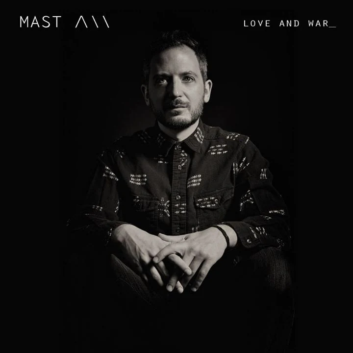

2016 · LP
Love and War_
A conceptual album shaped as a three-act play, released via Alpha Pup Records.

Album biography
About the work
Love and War_ is a deeply personal work arranged as a three-act play: setup, confrontation and resolution. Seventeen connected compositions use recurring themes as musical “characters” to trace the discovery of love, its collapse amid addiction and deception, and the process of healing into a deeper lasting relationship.
The mostly instrumental score joins electronic production with live guitar, keyboards, bass and drums. The emotional tone moves between sarcasm, vulnerability, intimacy and intensity, while the album’s structure gives the story a strongly visual, cinematic quality.
Guests include Taylor McFerrin, Makaya McCraven, Tim Lefebvre, Louis Cole, the Fresh Cut Orchestra, Andrée Belle and the Koreatown Oddity. “Me and You,” featuring Andrée Belle, brings the third act to its affirmative conclusion.
Featuring
Marta Bagratuni · Josh Johnson · Tim Lefebvre · Andrée Belle · Koreatown Oddity · Taylor McFerrin · Gavin Templeton · Ryat · Louis Cole · Fresh Cut Orchestra · Makaya McCraven · Nigel Sifantus
Personnel & credits
Label: Alpha Pup Records
Release: October 7, 2016
Tim Conley — guitar, bass, keys, synths, drum programming, production
Marta Bagratuni — cello, voice (4)
Josh Johnson — alto saxophone (8)
Tim Lefebvre — bass (8)
Andrée Belle — voice (15)
Koreatown Oddity — voice (12)
Taylor McFerrin — keys (10)
Gavin Templeton — alto and baritone saxophone (11, 16)
Ryat — voice (7)
Louis Cole — drums (11)
Brian Marsella — keys (5, 9)
Jason Fraticelli — upright bass (5)
Anwar Marshall — drums (2, 5)
Makaya McCraven — drums (16)
Nigel Sifantus — drums (14)
Mastered by Daddy Kev at Cosmic Zoo, Los Angeles. Cover photo by Alex Elena.
“He thinks big, real big… musically deep stuff.”— LA Weekly